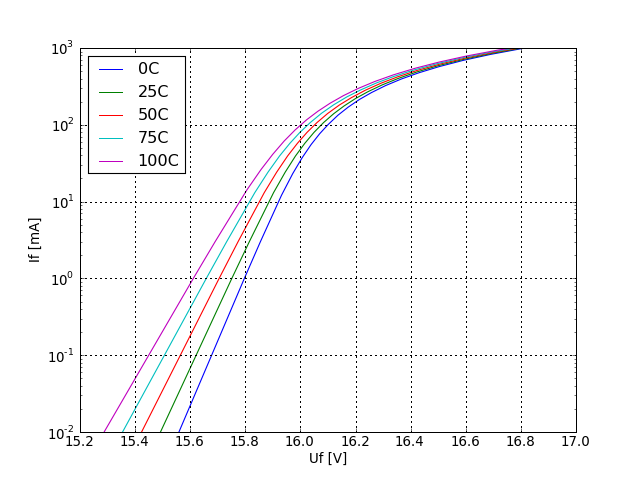
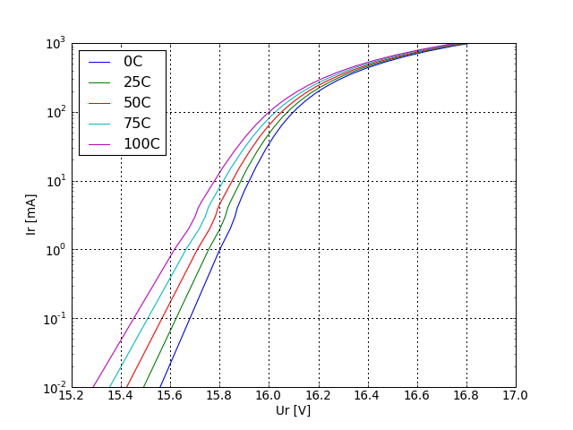

There are only two test simulations for a zener diode:
the forward voltage
the reverse voltage
Both simulations are done at different temperatures and
plotted in two semilogy plots.
postprocessing tests
The expected range for the forward and the reverse voltage should
be between 0 and 200 volts. It will catch all model errors where
either the reverse voltage is not specified or the simulator takes
a standard diode because of various model errors.
example test results

forward current as a function of forward voltage at different temperatures.

Reverse current as a function of reverse voltage at different temperatures.
Werner Hoch
Last modified: Mon Sep 21 14:46:45 CEST 2009